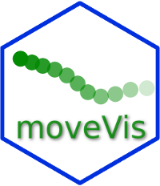

View movement tracks
example-7.RmdWith the simple view_spatial() wrapper, movement tracks
can be displayed on an interactive map using the very handy
mapview or leaflet packages. This may be
helpful if you want to explore data before animating them or check the
effect of applying correction methods as done by
align_move().
# in case, mapview or leaflet is not installed:
install.packages(c("leaflet", "mapview"))
library(moveVis)
library(move)
data("move_data")
# return a mapview map
view_spatial(move_data)An interactive map is returned. If you use RStudio, it will be displayed on the RStudio viewer pane:

When hovering a point with the cursor, the timestamps of that point
is displayed. Thanks to mapview, you may click on a point
to open a pop-up box containing the point’s attributes: